Книги
Авторы
Поиск
 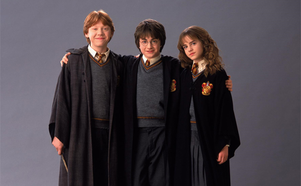
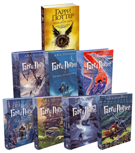
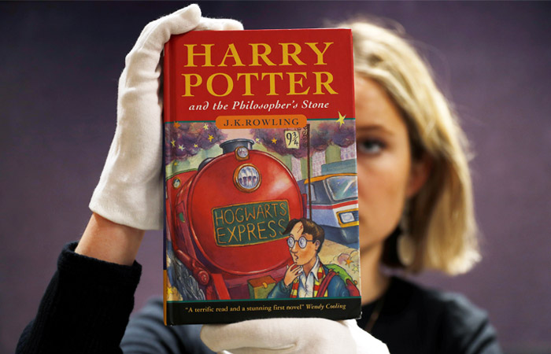
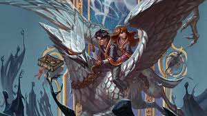
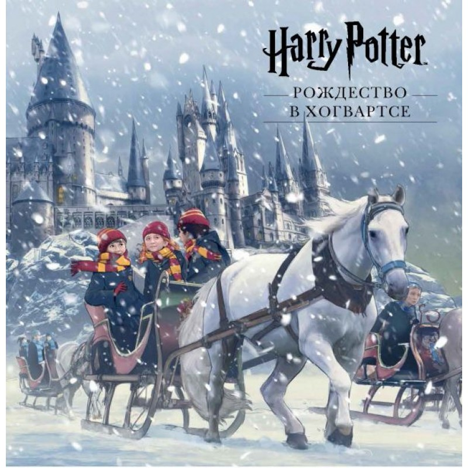
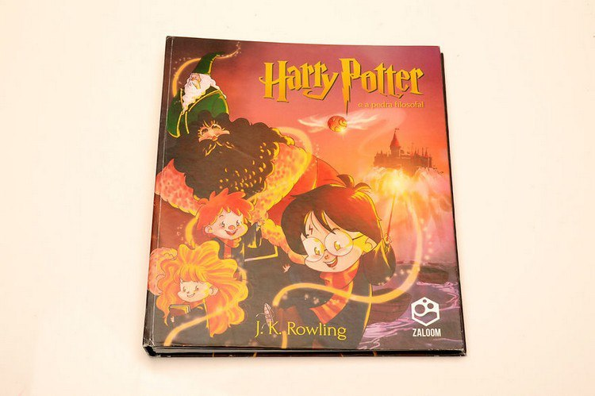
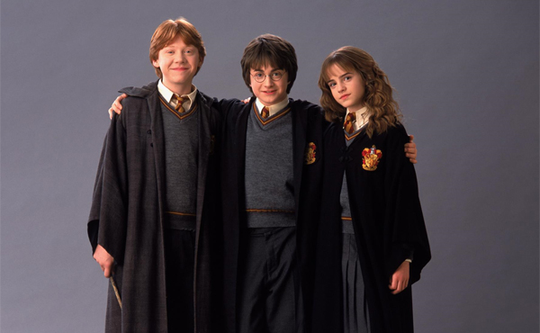
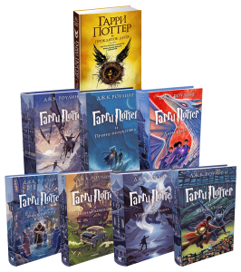
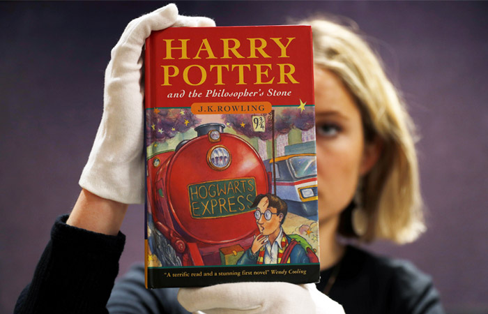
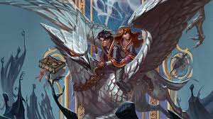
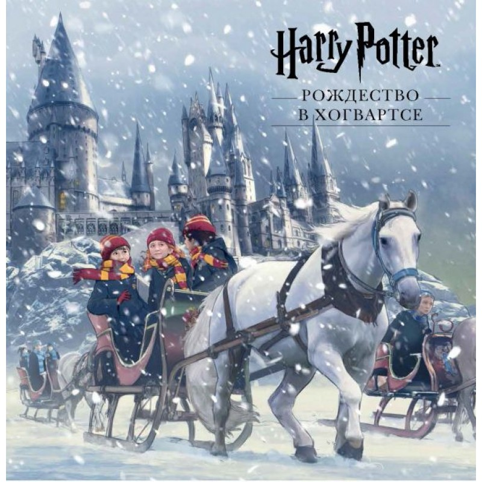
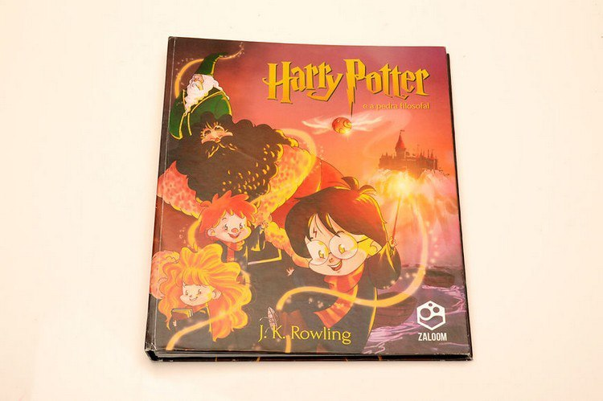
«Гарри Поттер» — серия романов, написанная британской писательницей Дж. К. Роулинг. Книги представляют собой хронику приключений юного волшебника Гарри Поттера, а также его друзей Рона Уизли и Гермионы Грейнджер, обучающихся в школе чародейства и волшебства Хогвартс. Основной сюжет посвящён противостоянию Гарри и тёмного волшебника по имени лорд Волан-де-Морт, в чьи цели входит обретение бессмертия и порабощение магического мира.
Начиная с публикации первого романа «Гарри Поттер и философский камень» 26 июня 1997 года, книги серии обрели огромную популярность, признание критиков и коммерческий успех во всем мире. По состоянию на февраль 2018 года количество проданных книг составило около 500 миллионов экземпляров, вследствие чего серия вошла в список литературных бестселлеров. Романы переведены на 80 языков, в том числе на русский.
Первоначально главными издателями книг являлись Bloomsbury в Великобритании и Scholastic Press в США. С тех пор серия была опубликована многими издательствами по всему миру. Книги были экранизированы кинокомпанией Warner Bros. Pictures в виде серии из восьми фильмов, ставшей одной из самых прибыльных в истории кинематографа.